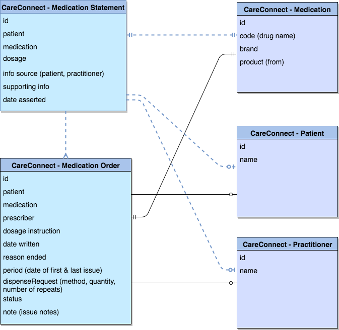

0. References
Architecture Patterns: Portal |
1. Overview
The Care Connect Medication profiles and relationships with other profiles are shown below:

MedicationStatement is a record of Medication that is being consumed by a patient. It is related to MedicationAdministration (record of the event where a Patient consumes or otherwise a medication) but is less detailed. MedicationOrder is a record of prescription issues, which provides detailed information and could be used with the MedicationStatement which provides summary information.
The diagram below shows the technical architecture of the Bristol scenario overlaid with Enterprise Integration Patterns EIP. The Trust Integration Engine (TIE) is collecting the patients prescriptions from a number of sources.
- The GP source is provided by GP Connect which selects a reply from the Patients GP Practice system supplier, the response conforms to a FHIR CareConnect-GPC profile.
- The EPR system supports CareConnect API and the response conforms to the CareConnect profiles.
- The e-Prescribing system has an API but the response isn’t in the correct format so the TIE transforms response to CareConnect FHIR format.
- The datawarehouse doesn’t have an API but is accessed by SQL ODBC queries, the TIE transforms the data into CareCorrect FHIR format.
Once all the data has been collated the TIE will send one response back to the Client system by aggregating all the responses. We have simplified the process of aggregation by converting all the responses to the same format.

2. Working with FHIR CareConnect Medication
Most of the data servers involved within the Bristol Medication scenario will be storing data on a SQL database server. This process would be done by many of the systems discussed in the previous section (GP/EPR systems and the TIE with the datawarehouse). This is shown below, the integration middleware will retrieve data from the SQL server and transform it into a FHIR resource.

To illustrate working with FHIR Medication resources we have listed extracts from four tables which simulate how these servers would store the data: -MedicationPatient stores the master Patient Medication record and corresponds to the CareConnect Medication Statement resource. -MedicationIssues stores the issues and is related to CareConnect MedicationOrder -Patient stores Patient demographics -Practitioner stores Practitioner information.
MedicationPatient
| MedicationId | Drug Name | Drug Code (SNOMED CT) | PatientId | FirstIssue | LastIssue |
|---|---|---|---|---|---|
| 6b980ed2-2dc6-48e4-886d-745862fc9529 | Cefaclor 375mg modified-release tablets | 323803009 | 6a7d31db-0bb8-4afa-bf4c-c32d5d4b8487 | 1997-06-09 | 1997-06-09 |
| 6b9c746e-4cce-4f5c-a2a7-0fd156dd57ac | Temazepam 20mg tablets | 321153009 | 6a7d31db-0bb8-4afa-bf4c-c32d5d4b8487 | 1995-09-02 | 2001-08-20 |
MedicationIssues
| IssueId | Drug Name | Drug Code (SNOMED CT) | PatientId | PractitionerId | IssueDate | Dosage | Quantity | Quantity Units | Method | Issue Type | Duration Of Issue | Private | Cancelled |
|---|---|---|---|---|---|---|---|---|---|---|---|---|---|
| 6bf79485-cee5-4a20-8e4a-4bf13aba33e6 | Temazepam Tablets 20 mg | 321153009 | 6a7d31db-0bb8-4afa-bf4c-c32d5d4b8487 | 651dfe43-26d6-49b3-b493-8955415912c7 | 1999-05-18T00:00:00 | 1on | 60 | tablets | P | R | 0 | false | false |
| 6bf71646-75e4-4b1c-8066-266a0af44adb | Temazepam Tablets 20 mg | 321153009 | 6a7d31db-0bb8-4afa-bf4c-c32d5d4b8487 | 651dfe43-26d6-49b3-b493-8955415912c7 | 1999-02-27T00:00:00 | 1on | 60 | tablets | P | R | 0 | false | false |
| 6bd48152-2249-430b-90d9-7b88031a1476 | Cefaclor 375mg modified-release tablets | 323803009 | 6a7d31db-0bb8-4afa-bf4c-c32d5d4b8487 | 651dfe43-26d6-49b3-b493-8955415912c7 | 1997-06-09T00:00:00 | ONE TO BE TAKEN TWICE A DAY | 14 | tablets | P | A | 0 | false | false |
Patient
| PatientId | NHSNumber | Forename | Surname | GP | PractitionerId | Gender |
|---|---|---|---|---|---|---|
| 6a7d31db-0bb8-4afa-bf4c-c32d5d4b8487 | 9439676165 | Karen | Samson | G8650149 | 651dfe43-26d6-49b3-b493-8955415912c7 | 1 |
Practitioner
| PractitionerId | GMP Code | Forename | Surname |
|---|---|---|---|
| 651dfe43-26d6-49b3-b493-8955415912c7 | G8650149 | Kevin | Swamp |
A client system wanting to access data in the MedicationPatient table will first need to obtain the logical Id of the patient. This is achieved by querying the Patient table, we will use the Patient NHS number to do this.
GET [baseUrl]\Patient?identifier=https://fhir.nhs.uk/Id/nhs-number|9439676165

This would return a FHIR Bundle with one Patient resource, from the Patient resource we will extract the logicalId of 6a7d31db-0bb8-4afa-bf4c-c32d5d4b8487. We can now query the MedicationPatient table using this logical Id.
GET [baseUrl]\MedicationStatement?patient=6a7d31db-0bb8-4afa-bf4c-c32d5d4b8487

This returns a FHIR Bundle containing two MedicationStatement. This may be enough for a summary screen but if we need to look in detail at a particular drug we can then query the issues using the drug code (medication), for Temazepam Tablets 20 mg the code (SNOMED Concept Id) is 321153009 (see line 30-34 in the XML sample). The Patient search parameter uses the same logical patient Id as before, note this is present in the MedicationStatement at lines 15-18. If the Patient or Practioner details are required please see details in Patient Search
Using this Patient Id and including the Concept code the query is:
GET [baseUrl]\MedicationOrder?patient=6a7d31db-0bb8-4afa-bf4c-c32d5d4b8487&code=http://snomed.info/sct|321153009

This results in a FHIR Bundle which contains two MedicationOrder. Note: consider including a date parameter to limit the amount of results returned.
3. Creating FHIR CareConnect Medication’s in code
The code below shows how the same three queries can be done in java.
[TODO Validate code]
Java examples for creating FHIR MedicationOrder and MedicationStatement resources based on the MedicationIssues and MedicationPatient tables can be found on GitHub.